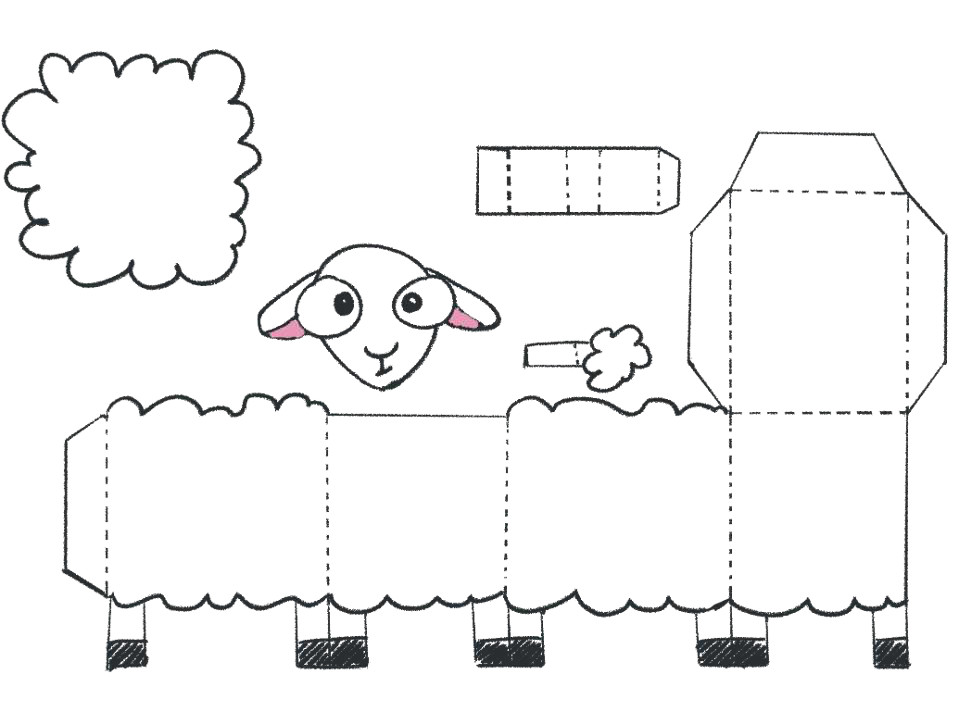

TEMATIKA 1: MATERIALET DHE PËRPUNIMI I TYRE2. Dita dhe Dielli në punëtori
Puno në shtëpi
Ndihmë: si të punoj?
Kjo veprimtari bëhet me duar. Nëse e ke të vështirë të vizatosh ose të presësh, kërkoji një të rrituri të t’i përgatitë pjesët. Ti mund t’i prekësh, t’i palosësh dhe t’i ngjitësh.
1.
Veprimtari. Puno delen në shtëpi.
Materialet e nevojshme: ngjitës, gërshërë, letër apo karton.
- Me ndihmën e më të rriturve, vizato delen në një fletë formati ose karton, sipas shembullit të mëposhtëm. Delen mund ta bësh edhe duke u bazuar në udhëzime të tjera jashtë këtij libri.
- Pasi ta skicosh me laps, prite me gërshërë sipas vijave të ndërprera.
- Ngjite me ngjitës dhe formo delen.
- Ngjit në kurrizin e saj lesh ose në mungesë të tij fije penjsh ose copa letre të prera hollë.
- Sille punimin tënd në klasë në orën vijuese dhe paraqite para shokëve.
